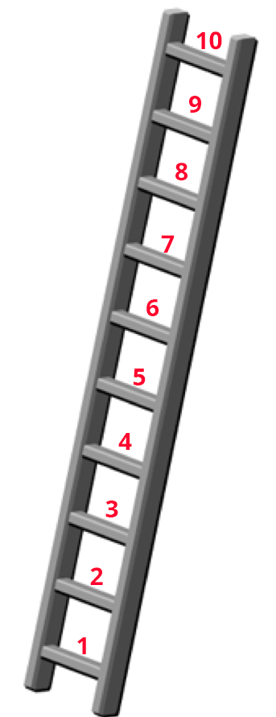

<!DOCTYPE html>
<html lang="en">

<head>
    <title>sv-rc-generate-neighborhood</title>
    <meta charset="UTF-8">

    <!---- STYLESHEETS ---->
    <link href="https://unpkg.com/jspsych@7.2.3/css/jspsych.css" rel="stylesheet" type="text/css" />
    <!-- <link rel="stylesheet" href="https://unpkg.com/@jspsych/plugin-survey@0.2.1/css/survey.css"> -->
    <link href="assets/css/jsPsych-survey2.css" rel="stylesheet" type="text/css">
    <link rel="stylesheet" href="assets/css/bootstrap-alart.css">
    <link rel="stylesheet" href="assets/css/jsPsych-padding.css">
    <link rel="stylesheet" href="assets/css/jsPsych-text-edits.css">
    <!--<link rel="stylesheet" href="assets/css/center.css">-->


    <!---- SCRIPTS ---->
    <script src="https://unpkg.com/jspsych@7.3.3"></script>
    <script src="lib/jspsych-7-pavlovia-2022.1.1.js"></script>

    <!-- New Line -->

    <script src="assets/scripts/groups.js"></script>
    <script src="assets/scripts/firebase.js"></script>
    <script src="assets/scripts/jquery-3.6.0.min.js"></script>

    <script src="https://cdn.jsdelivr.net/npm/underscore@1.13.1/underscore-umd-min.js"></script>
    <script src="https://code.jquery.com/jquery-3.6.0.min.js"></script>
    <script src="https://unpkg.com/@jspsych/plugin-browser-check@1.0.1"></script>
    <script src="https://unpkg.com/@jspsych/plugin-preload@1.1.1"></script>
    <script src="https://unpkg.com/@jspsych/plugin-html-button-response@1.1.1"></script>
    <script src="https://unpkg.com/@jspsych/plugin-image-button-response@1.1.1"></script>
    <script src="https://unpkg.com/@jspsych/plugin-survey-text@1.1.1"></script>
    <script src="https://unpkg.com/@jspsych/plugin-survey@0.2.0"></script>

    <script src="assets/scripts/plugin-rc-response.js"></script> <!--style adjusted image-button-response plugin for rc trials-->
    <script src="assets/scripts/script.js"></script>


</head>

<body></body>

<script>
    ////////* STUDY SETUP */////////
    // Initialize jsPsych
    var jsPsych = initJsPsych({
        use_webaudio: false,
        on_finish: function(data){
            let sona_id = jsPsych.data.getURLVariable('sona_id');
            window.location.assign("https://umichpsych.sona-systems.com/webstudy_credit.aspx?experiment_id=3457&credit_token=8f9f17b68d7e408a9e7ca02ac927a7d0&survey_code="+sona_id)
        },
    });
    // timeline
    var timeline = [];

    /*
                        Experiment
                    |               |
                    |               |
                Condition1      Condition2
                 |      |        |      |
                 |      |        |      |
               Block  Block    Block  Block
                 |      |        |      |
                 |      |        |      |
               Trials Trials   Trials Trials
    */

    //TODO Set Variables

    let num_of_correlation_pairs = 360;  //Total number of correlation pairs.

    let correlation_pairs_per_trial = 6; //How many pairs should be in each trial, set to 1 for a simple a-b test.

    let trials_per_block = 15; // Number of trials in a block

    let num_of_stimuli = 960;  //Total number of stimuli images.

    let stimuli_per_block = 8; //How many stimuli appear in each block

    let num_of_blocks_in_section = 8; // Number of trials in each ection

    let num_sections = 15; // Number of sections in the data

    let num_conditions = 2; // Number of conditions being tested

    let num_attention_checks = 2; // Number of attention checks to be inserted per condition

    let slideshowFreeDescription = true; //Whether to run a page after the slideshow

    //let num_blocks = 4;
    let num_blocks = Math.floor(num_of_correlation_pairs * num_conditions / (correlation_pairs_per_trial * trials_per_block));


    //END TODO\\

    let blocks_per_condition = num_blocks / num_conditions;

    let num_attention_checks_correct = 0;


    var subject_id = jsPsych.data.getURLVariable('PROLIFIC_PID');
    var study_id = jsPsych.data.getURLVariable('STUDY_ID');
    var session_id = jsPsych.data.getURLVariable('SESSION_ID');

    jsPsych.data.addProperties({
        subject_id: subject_id,
        study_id: study_id,
        session_id: session_id,
    });

    var section = Math.floor(Math.random() * num_sections) + 1;  //Decides participant's section.

    var stimuli_map = groups[section]; //Creates a map from assets/scripts/groups.js, that relates section number to which MSA will be shown

    // 3D array, where each table corresponds to a specific condition,
    // each row corresponds to a specific block, and each column is a stimulus image.
    var stimuli = []
    for (let condition = 1; condition <= num_conditions ; ++condition){
         var stimuli_that_match_condition = []

        for (key in stimuli_map){
            if (condition == condition_map[key]){
                stimuli_that_match_condition.push(stimuli_map[key]);
            }
        }

        stimuli.push(stimuli_that_match_condition);
    }

    jsPsych.data.addProperties({ section: section });  //Adds what section the participant is to the final data

    var correlation_images = _.range(1, num_of_correlation_pairs + 1); //Creates a range of numbers that will correspond to the RC images

    correlation_images.sort(() => (Math.random() - 0.5));  //Shuffles pairs.

    function pad(num, size) {
      // Pads numbers to align with format of file names
      var s = "00000" + num;
      return s.substr(s.length - size);
    }

    correlation_images = correlation_images.map(function (e) {
      //Adds the full path names to each number
      return [
        "./rc_img/rcic_cop_1_" + pad(e, 5) + "_ori.png",
        "./rc_img/rcic_cop_1_" + pad(e, 5) + "_inv.png",
      ];
    });

    correlation_images = _.flatten(correlation_images); //Flattens so we have a long 1d array of all the file names

    correlation_trials = _.chunk(correlation_images, correlation_pairs_per_trial * 2); //Chunkates correlation images into trials.

    for (var correlation_trial of correlation_trials){
        correlation_trial.sort(() => (Math.random() - 0.5)); //Shuffles position of images within a trial.
    }

    correlation_blocks = _.chunk(correlation_trials, trials_per_block); //Chunkates trials into blocks.

    data = [];  //Each element of array contains necessariy information to build a single block.

    for (let j = 0 ; j < num_conditions ; ++j){
        for (let i = 0; i < blocks_per_condition; ++i){
            data.push([[...stimuli[j][i]], [...correlation_blocks[i]], (j*num_conditions) + i]); // Jank for deep copy
            // All data needed to produce block, the stimuli, the correlation images, and a unique identifier.
        }
    }

    attention_check_images = [
        './assets/img/attnchk_inv.png',
        './assets/img/attnchk_ori.png',
        './assets/img/attnchk_ori.png',
        './assets/img/attnchk_ori.png',
        './assets/img/attnchk_ori.png',
        './assets/img/attnchk_ori.png',
        './assets/img/attnchk_ori.png',
        './assets/img/attnchk_ori.png',
        './assets/img/attnchk_ori.png',
        './assets/img/attnchk_ori.png',
        './assets/img/attnchk_ori.png',
        './assets/img/attnchk_ori.png',
    ];

    attention_check_array = []; // 2D array of attention checks, where each sub-array contains all 8 file names, and randomizes where the correct image is.

    for (var i = 0 ; i < num_attention_checks ; i++){
        var input_array = [...attention_check_images.sort(() => (Math.random() - 0.5))]; // Jank for deep copy
        attention_check_array.push(input_array);
    }

    for (var i = 0 ; i < num_attention_checks ; i++){
        //Place attention checks randomly throughout expirement, adding to a block, not replacing a trial.
        trial = Math.floor(Math.random() * trials_per_block);
        data[i][1].splice(trial, 0, attention_check_array[i]);
    }


    data.sort(() => (Math.random() - 0.5));  //Randomizes order of blocks.

    var pavlovia_id = 's-' + section + '_p-' + subject_id + '_s-' + session_id;

    //Initializing Pavlovia
    var pavlovia_init = {
        type: jsPsychPavlovia,
        data: {
             task: 'pavlovia-init'
         },
         command: "init"
    };

    timeline.push(pavlovia_init);

    //Making sure the browser is capable of handling the expirement.
    var browserCheck = {
        type: jsPsychBrowserCheck,
        data: {
            task: 'browser-check'
        },
        minimum_width: 1100, //700
        };
    timeline.push(browserCheck);


    //Consent Good!
    var consentForm = {
        type: jsPsychHtmlButtonResponse,
        stimulus: consentHTML,
        data: {
            task: 'consent'
        },
        choices: ['Decline and exit', 'Accept and continue'],
    };
    timeline.push(consentForm);

    //Load various supporting images
    var imagespreload = {
        type: jsPsychPreload,
        images: ['assets/img/attnchk_inv.png',
                'assets/img/attnchk_ori.png',
                'assets/img/countdown-15.gif',
                'assets/img/ladder_marked.png',
                'assets/img/rc_example_6x2.png',
                'assets/img/loading.gif',
        ],
        show_progress_bar: false,
    }

    //Load all reverse correlation images (This is the long one at the begning)
    var RCpreload = {
        type: jsPsychPreload,
        auto_preload: true,
        images: Array.from(correlation_images),
        show_detailed_errors: true,
        message: `<p>Please wait one moment...</p><br>`,
        show_progress_bar: false,
    }

    //Intro of the experiment

    var intro1 = {
        type: jsPsychHtmlButtonResponse,
        data: {
            task: 'instruction1',
        },
        choices: ['Next'],
        stimulus: html_intro1
    };

    var intro2 = {
        type: jsPsychHtmlButtonResponse,
        data: {
            task: 'instruction2',
        },
        choices: ['Next'],
        stimulus: html_intro2
    };

    var ready = {
        type: jsPsychHtmlButtonResponse,
        data: {
            task: 'instructions',
        },
        stimulus: '<h1 style="color: #dc3545"><b>READY</b></h1>',
        trial_duration: 750,
        choices: [],
    };

    var set = {
        type: jsPsychHtmlButtonResponse,
        data: {
            task: 'instructions',
        },
        stimulus: '<h1 style="color: #FFC100"><b>GET SET</b></h1>',
        trial_duration: 750,
        choices: [],
    };

    var go = {
        type: jsPsychHtmlButtonResponse,
        data: {
            task: 'instructions',
        },
        stimulus: '<h1 style="color: #28a745"><b>GO!</b></h1>',
        trial_duration: 750,
        choices: [],
    }


    ////////* EXPERIMENT */////////
    function make_block(stimuli /*array of stimuli to be shown*/, correlation_images /*2d array, where the outer layer defines what trial it should be in*/, block_number) {
        // Preload SV images of the block
        var preloadSV = {
            type: jsPsychPreload,
            images: stimuli.map(stimulus => 'stimulus/' + stimulus),
            message: `Next session will soon be started...`,
        }

        timeline.push(preloadSV);

        var after_SVpreload = {
            type: jsPsychHtmlButtonResponse,
            data: {
                task: 'after_SVpreload_prompt',
            },
            choices: ['Next'],
            stimulus: after_preload_message
        }
        timeline.push(after_SVpreload);

       // SV trial
        function svTrial(img) {
            var trialSV = {
                type: jsPsychImageButtonResponse,
                data: {
                    task: 'SV slide show',
                    block: block_number
                },
                stimulus: 'stimulus/' + img,
                trial_duration: 1000,
                choices: [],
            };
            return trialSV
        };

        function makePreambleStr(instructions){
            var preambleStr = preambleStrInit;
            for (var stimulus of stimuli) {
                preambleStr += ``;
            }
            preambleStr += instructions;
            preambleStr += preambleStrLast;
            return preambleStr;
        }

        var preambleStr = makePreambleStr(preambleStrFreeDescription);

        var slideshowFreeDescription = {
            type: jsPsychSurveyText,
            preamble: preambleStr,
            data: {
                task: 'Free Description',
                block: block_number,
                stimulus: stimuli,
            },
            questions: [
                {
                    prompt: "",
                    rows: 8,
                    columns: 80
                }
            ],
            button_label: Continue_button
        };

        preambleStr = makePreambleStr(preambleStr_neighbor_first);

        var neighborhood_impression = {
            type: jsPsychSurvey,
            button_label_finish: 'Continue',
            data: {
                task: "neighborhood impression",
                block: block_number,
                stimulus: stimuli,
            },
            pages: [
                [
                    {
                        type: "html",
                        prompt: preambleStr,
                    },
                    {
                        type: "likert-table",
                        prompt: " ",
                        options: ['Far below average', 'Somewhat below average', 'Average', 'Somewhat above average', 'Far above average'],
                        required: false,
                        statements: [
                            {prompt: 'Violence (e.g. gun, domestic, sexual)', name: 'Question 1'},
                            {prompt: 'Crime (e.g., homicide, robbery, burglary, etc.)', name: 'Question 2'},
                            {prompt: 'Drug abuse', name: 'Question 3'},
                            {prompt: 'Quality of schools', name: 'Question 4'},
                            {prompt: 'Economic opportunities', name: 'Question 5'},
                        ]
                    }

                ]
            ]
        };

        preambleStr = makePreambleStr(`What proportion of this neighborhood’s population do you think is...`);

        var neighborhoodRaceDemog= {
            type: jsPsychSurvey,
            button_label_finish: 'Continue',
            data: {
                task: "NRaceDemog",
                block: block_number,
                stimulus: stimuli,
            },
            pages: [
                [
                    {
                        type: "html",
                        prompt: preambleStr,
                    },
                    {
                        type: "likert-table",
                        prompt: " ",
                        options: ['Almost none', 'A little', 'Somewhat', 'Mostly', 'Almost entirely'],
                        required: false,
                        statements: [
                            {prompt: 'White', name: 'White'},
                            {prompt: 'Black', name: 'Black'},
                            {prompt: 'Asian', name: 'Asian'},
                            {prompt: 'Hispanic', name: 'Hispanic'},
                        ]
                    }

                ]
            ]
        };

        preambleStr = makePreambleStr(preambleAssign);

        trials = [];
        var trialCounter = 1;
        for (var correlation_images_in_trial of correlation_images){

            var choicesList = [];

            for(var correlation_image of correlation_images_in_trial){
                choicesList.push(``);
            }

            if (correlation_images_in_trial[0] ==  './assets/img/attnchk_inv.png' ||
                correlation_images_in_trial[0] ==  './assets/img/attnchk_ori.png'){
                for (var i = 0 ; i < correlation_images_in_trial.length ; ++i){
                    if (correlation_images_in_trial[i] ==  './assets/img/attnchk_inv.png'){
                        var correct_answer = i;
                    }
                }
                var trial = {
                    type: jsPsychrc_response,
                    post_trial_gap: 200,
                    data: {
                        task: 'attention-check',
                        stimulus: stimuli,
                        choices: correlation_images_in_trial,
                        block: block_number
                    },
                    margin_vertical : 100,
                    margin_horizontal : 200,
                    on_finish: function(data){
                        if(data.response == correct_answer){
                            num_attention_checks_correct += 1;
                            data.correct = true;
                        } else {
                            data.correct = false;
                        }
                    },
                    stimulus: function() {
                        preambleStr = "";
                        preambleStr += preambleStrInit;
                        for (var stimulus of stimuli) {
                            preambleStr += ``
                        };
                        preambleStr += "</br>Trial: " + trialCounter + "/" + "15" + "</br>";
                        preambleStr +=  preambleAssign,
                        preambleStr += preambleStrLast
                        return preambleStr;
                    },
                    choices: choicesList
                };
            }

            else{
                var trial = {
                    type: jsPsychrc_response,
                    post_trial_gap: 200,
                    data: {
                        task: 'best-RC',
                        stimulus: stimuli,
                        choices: correlation_images_in_trial,
                        block: block_number
                    },
                    margin_vertical : 100,
                    margin_horizontal : 200,
                    stimulus: function() {
                        preambleStr = "";
                        preambleStr += preambleStrInit;
                        for (var stimulus of stimuli) {
                            preambleStr += ``
                        }
                        preambleStr += "</br>Trial: " + trialCounter + "/" + "15" + "</br>";
                        trialCounter += 1,
                        preambleStr +=  preambleAssign,
                        preambleStr += preambleStrLast
                        return preambleStr;
                    },
                    choices: choicesList
                };
            }

            trials.push(trial);

        }


        for (var stimulus of stimuli) {
            timeline.push(svTrial(stimulus));
        }

        if (slideshowFreeDescription){
            timeline.push(slideshowFreeDescription)
        }

        if (neighborhood_impression){
            timeline.push(neighborhood_impression);
        }
        if (neighborhoodRaceDemog){
            timeline.push(neighborhoodRaceDemog);
        }

        for (var trial of trials){
            timeline.push(trial);
        }


    };

    var half_way = {
        type: jsPsychHtmlButtonResponse,
        data: {
            task: 'half-way'
        },
        stimulus: half_way_message,
        choices: [],
        trial_duration: 15750
    };


    ////////* END OF EXPERIMENT */////////

    function selfDescribe() {
        a = document.getElementById('self-describe');
        a.checked = true;
    };

    var demoSurvey = {
        type: jsPsychSurvey,
        pages: [
            [
                {
                    type: 'html',
                    prompt: `<p><b>Thank you for your responses. <br> Finally, we’d like to ask you a few questions about yourself.</b></p>`,
                },
                {
                    type: 'text',
                    prompt: "What is your age in years?",
                    name: 'age',
                    input_type: 'number',
                    required: false,
                },
                {
                    type: 'multi-choice',
                    prompt: "Please indicate your sex",
                    name: 'sex',
                    options: [
                        "Female",
                        "Male",
                        "Intersex",
                        "I prefer not to answer this question",
                    ],
                    required: false,
                },
                {
                    type: 'multi-choice',
                    prompt: "Please indicate your gender indentity",
                    name: 'gender',
                    options: [
                        "Woman",
                        "Man",
                        "Non-Binary or another gender identity",
                        "I prefer not to answer this question"
                    ],
                    required: false,
                },
                {
                    type: 'text',
                    prompt: "Please describe your gender identity if you checked on 'Non-Binary or another gender' above",
                    name: 'gender-describe',
                    required: false,
                },
                {
                    type: 'multi-select',
                    prompt: "Which category best describes you? Select all that apply.",
                    name: 'ethnicity',
                    options: [
                        'White or of European ancestry',
                        'Black or of African ancestry',
                        'East Asian',
                        'South East Asian',
                        'South Asian',
                        'Pacific Islander',
                        'Hispanic or Latinx',
                        'Bi-racial or Multi-racial',
                        'Middle Eastern',
                        'None of the above',
                    ],
                    required: false,
                },
                {
                    type: 'multi-choice',
                    prompt: "How would you describe your politial ideology?",
                    name: 'ideology',
                    options: [
                        "Very Liberal",
                        "Liberal",
                        "Moderate",
                        "Conservative",
                        "Very Conservative"
                    ],
                    required: false,
                },
                {
                    type: 'text',
                    prompt: "How many times during your childhood did you move to a totally new neighborhood or town?",
                    name: 'move',
                    input_type: 'number',
                    required: false,
                }
            ],
            [
                {
                    type: 'html',
                    prompt: `<div class="text-container">
                        <p style="text-align: left;">
                            Think of this ladder as representing where people stand in the United States.
                            At the top of the ladder are the people who are the best off – those who have the most money, the most education, and the most respected jobs.
                            At the bottom are the people who are the worst off – those who have the least money, least education, the least respected jobs, or no job.
                            The higher up you are on this ladder, the closer you are to the people at the very top; the lower you are, the closer you are to the people at the very bottom.
                        </p>
                        
                        </div>`,
                    name: 'ladder',
                    required: false,
                },
                {
                    type: 'likert',
                    prompt: "Where would you place yourself on this ladder?",
                    name: 'class',
                    likert_rating_min: 1,
                    likert_scale_max: 10,
                    likert_scale_stepsize: 1,
                    required: false,
                }
            ],
        ],
        button_label_next: 'Continue',
        button_label_back: 'Previous',
        button_label_finish: 'Submit',
        show_question_numbers: 'on',
    };


    /* END OF STUDY */

    var endSurveyDebrief = {
        type: jsPsychSurveyText,
        data: {
            task: 'end-survey'
        },
        preamble: debriefHTML,
        button_label: ['Exit Experiment'],
        questions: [
            {
                prompt: endSurveyDebriefQuestion,
                rows: 8,
                columns: 80
            }
        ],
        on_finish: function(data){
            data.num_attention_checks_correct = num_attention_checks_correct;
        },
    };

    var endRedirect = {
        type: jsPsychHtmlButtonResponse,
        data: {
            task: 'end-survey',
        },
        stimulus: endRedirectPrompt,
        trial_duration: 2000, //5000
        choices: []
    };


    var pavlovia_finish = {
        type: jsPsychPavlovia,
        data: {
            task: 'pavlovia-finish'
        },
        command: "finish",
        participantId: pavlovia_id,
    };

    ////////* TIMELINE */////////
    timeline.push(imagespreload);
    timeline.push(RCpreload);
    timeline.push(intro1);
    timeline.push(intro2);
    //timeline.push(ready);
    //timeline.push(set);
    //timeline.push(go);


    for (var i = 0 ; i < data.length ; ++i){
        if (i == Math.floor(data.length / 2)){
            timeline.push(half_way);
        }
        make_block(data[i][0], data[i][1], data[i][2]);
    }


    timeline.push(demoSurvey);
    timeline.push(endSurveyDebrief);

    // Recommend this object is **BEFORE** the trial to redirect for completion or display code
    timeline.push(pavlovia_finish);

    timeline.push(endRedirect);


    // start the experiment
    jsPsych.run(timeline);
</script>